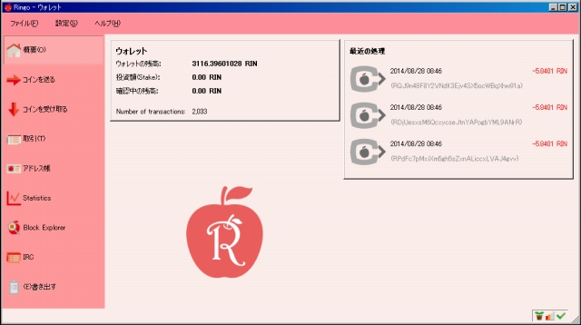
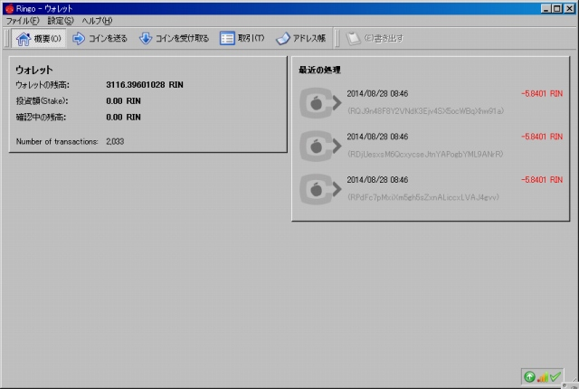
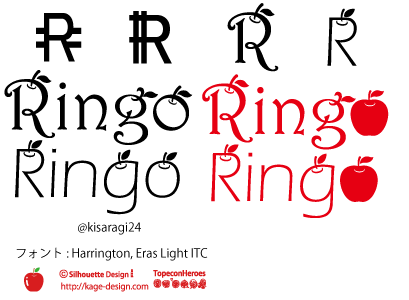
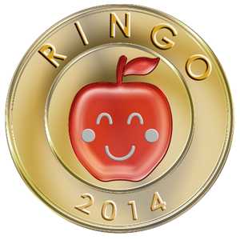

- Ringo ♥-

Ringoは2014/5/25に誕生した
暗号通貨です
何枚か持ってると時々増えます
掘っても持っていても楽しい！
Ringoはそんなコインです
Download
最新版 v1.1.1.1 beta (New GUI) ベータ版につきQTのみ
IRCでRingoyayというアカウント常駐してます
お気軽にどぞ- 
-
安定版 v1.0.4.2 (Classic GUI) クラシックGUIの安定版です
QT,インストーラー(winのみ),coind入り

- v1.1.1.1 [2014/7/20] IRCでニックネームに-と_が、ホストがIPv6の時、表示されない問題を修正
- v1.1.1 [2014/7/17] IRCの追加
- v1.1.0 [2014/6/28] ウォレットのデザイン変更
- v1.0.4.2 [2014/6/28] sync-checkpointのキー変更、pnSeed、チェックポイント追加、その他の修正
- v1.0.4.1 [2014/6/6] OpenSSLのバージョンを1.0.1hに
- v1.0.4 [2014/6/1] PoS報酬のブロック数取得の修正(20001ブロック問題)、checkpointの追加
- v1.0.3.1 [2014/5/29] 前回の修正で不十分だったPoS報酬のDiff参照の一部問題の修正
- v1.0.3 [2014/5/28] PoS報酬のDiff参照の一部問題の修正、checkpointの追加
- v1.0.2 [2014/5/28] Syncの不具合修正、checkpointの追加
- v1.0.1 [2014/5/26] checkpointの追加
- v1.0.0 [2014/5/25] 公開
- ＊1.0.3.1までの方は更新をおねがいします
- 更新前には念のためwallet.datのバックアップをお願いいたします
Ringoの入手方法
RingoはPoWによるマイニングは終了しました。
現在の入手方法は
1) PoS採掘により入手する
Ringoはウォレットに残高があるとPoS採掘が始まり、成功するとRINが入手できます。
条件は
1 .1RIN以上保有していること
2. ウォレットに入ってから6時間以上経過
3. ウォレットに入ってから360ブロック以上経過
4. weightが1以上
PoS採掘が始まると右下の矢印のアイコンが緑色になります。
残高が多いほど、待っている期間が長いほどweightが増え、PoS採掘に成功しやすくなります。
2) 誰かから貰う
2ch.netの仮想通貨板のRingoスレでアドレスを貼ると誰かからもらえるかもしれません。
3) 無料で配布をしているサイトから入手する
sighash.infoさん、コインプレゼント(仮称)さん、LA FaucetさんがRINのfaucetに対応していただきました！
また、twitter上で@throwrinさんが、IRC上でkojikiBOTさんがRINを配布されています。
faucetは寄付によって維持されてるので、
余裕のある方からの寄付があれば多くの人がRINを入手できます。
ご協力をお願いいたします。
4) 他の通貨とトレードする
Ringoは他の通貨とトレードして入手できます。
allcoin.com
monatr.jp
trade.monaco-ex.org
が現在Ringoに対応している取引所になります。
5) マルチ・プールで採掘する
Ringoのマルチプールが出来ました！
マルチ・プールは他の通貨を採掘し、RINへトレードし配布する仕組みです。
基本的にはプールで掘るものと同じ感覚でRINを入手できます。
LA Multi Pool (beta) Scrypt / X11
Specifications
Name : Ringo
Symbol : RIN
Algorithm : Scrypt / Proof of Work + Proof of Stake(Difficulty Reward)
Max Coins: 80,000,000,000
Premine : 0
Block time : 1 minute
Difficulty : DigiShield v2.0
Confirmations on Transactions: 10
Confirmations on Mined Blocks: 360
Port : 9393
RPCPort : 9292
[Proof of Work]
- Block Reward : 10 + 直前のDifficulty100倍ボーナス
- Total Blocks : 10000までで採掘終了
10000ブロック目のPoWのDiffは38.54486305でした！
[Proof of Stake (Difficulty Reward)]
- Block Reward :
- 1 ～10000 Blocks 直前のPoW Diff × 100
- 10001～20000 Blocks 10000Block目のPoW Diff × 100
- 20001 ～120000 Blocks 10000Block目のPoW Diff × 10
- 120001 ～それ以降 10000Block目のPoW Diff
- StakeMinAgeは6時間に設定
PoS報酬の更新
- 10000ブロック目のPoWのDiff 38.54486305によりPoSの報酬が決まりました
- 10001-20,000 blocks / 3854.48630467 RIN
- 20001-120000 / 385.44863047 RIN
- 120001 - / 38.54486305 RIN
Ringoって？
Q. 名前について
A. このコインでリンゴ(実物)とトレード出来る日が来ることを願って制作しました
シャキっとしたリンゴが大好きで年中食べてますQ. PoWの仕様について
A. パワーのある採掘者がたくさん報酬を得られる仕様なので、ある意味公平だと思います
Diffボーナスはyaycoinで上手く動かせることが出来たので大丈夫なハズ
追記:PoWは終了しましたQ. Proof of Stake (Difficulty Reward)について
A. PoS採掘でも十分な報酬を得られるように設定しました
10000Block以降はBlock10000時のPoWのDiffが基準となります
少額でも持っていれば大きな報酬を得られる可能性があるので、とてもお得な仕様ですQ.PoWの採掘期間を限定した理由について
A. PoSコインの配布方法はプレマインやIPOがありますが、
その中では短期間でのPoW配布がフェアだとの判断です
長期間でなく短期間のほうがお得感があって採掘が楽しいですねQ. Diffで報酬が変更するコインの価値について
A. 予想できません
リンゴ(実物)とのトレードも活発になってくれると嬉しいですQ. なぜScrypt？
A. RingoはASICウェルカムなコインです
ASICはとてもエコだそうですよImages

Download
制作して頂いたクリエーターさんのアドレス
ringo:RRingo2JjYAY7UsAj5ipw84Zrrt8bTBaHo
こんな感じで利用させてもらいました！
- スマートマイニング様にもロゴを作っていただきました！
- 
-
Donate
コイン制作者のアドレス
ringo:RMpGSC9J3dxmy8SPs1aWHkEDTLVbEqHdnyContact
chat
Twitter
beembanbanあっとまーくyahoo.co.jp
リンゴのイラストは、こちらのサイト様の素材をベースに作成しました本サイト及びプログラムを利用することで発生したいかなる損失・損害に対しその責任を負いません